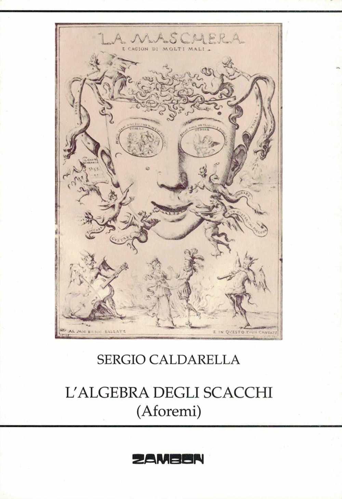
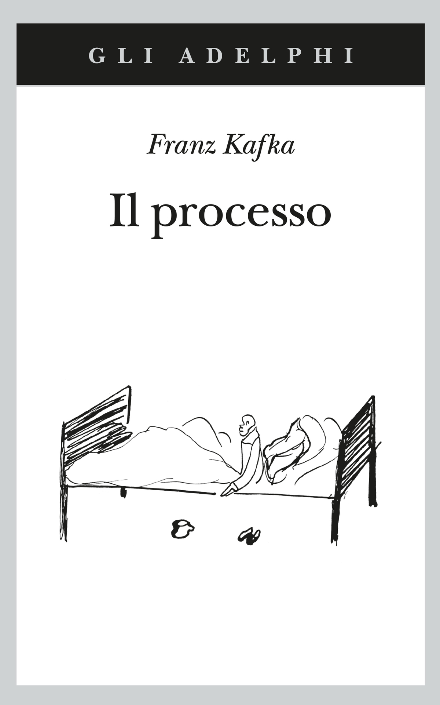

23:45 · 7 OPERE
L’algebra degli scacchi. Lettura della digressione introduttiva.
Il filo del discorso
La digressione introduttiva a L’algebra degli scacchi usa numeri e gioco per esplorare i limiti della conoscenza e la forza dell’immaginazione. La leggenda dei chicchi di grano sulla scacchiera mostra come grandezze apparentemente familiari possano sfuggire alla nostra misura. Il discorso passa ai libri, descritti come opere aperte a molte letture, e al ruolo creativo di chi li incontra. Seguono esempi di simbolismo numerico nella Bibbia e nelle tradizioni filosofiche e religiose, insieme al richiamo a distinguere l’interpretazione mistica dal calcolo matematico. Nella parte finale l’aforisma, l’intuizione e il gioco tornano a sostenere la possibilità di pensare altrimenti e resistere al conformismo. Le ricostruzioni storiche e simboliche appartengono al testo letto e non sono qui assunte come dimostrazioni scientifiche.
I libri nel discorso

L’algebra degli scacchi
Copertina: Zambon, 2008
Titolo nel segmento iniziale a 00:04–00:08, con annuncio della lettura della digressione di apertura.
Passaggio 0:04 ↗ · Fonti e libro ↗
Bibbia
Copertina: San Paolo, 2014 · Nuova Versione dai Testi Antichi · edizione di riferimento
La Bibbia è nominata nell’elenco di opere a 04:28, poi richiamata a 08:06; seguono riferimenti al Vangelo secondo Giovanni da 09:53 e a Genesi da 12:33.
Passaggio 4:28 ↗ · Fonti e libro ↗
Divina Commedia
Copertina: Giunti Barbera · Passepartout, 2021 · edizione di riferimento
Titolo riconoscibile nell’elenco di opere che consentono più livelli di lettura.
Passaggio 4:33 ↗ · Fonti e libro ↗
Don Chisciotte della Mancia
Copertina: Newton Compton · Vintage · edizione di riferimento
Titolo abbreviato a 04:33–04:35 nello stesso elenco di opere.
Passaggio 4:33 ↗ · Fonti e libro ↗
I fratelli Karamazov
Copertina: Newton Compton · I Mammut Gold · edizione di riferimento
Il titolo è pronunciato; a 04:35 segue il cognome dei fratelli.
Passaggio 4:35 ↗ · Fonti e libro ↗
Il processo
Copertina: Adelphi · gli Adelphi, 2020 · edizione di riferimento
Titolo nel segmento a 04:35–04:38, seguito dall’attribuzione kafkiana nel contesto immediato.
Passaggio 4:35 ↗ · Fonti e libro ↗
La ballata del vecchio marinaio
Identificazione probabile
Copertina: BUR Rizzoli · illustrazioni di Gustave Doré
Da 07:34 il testo nomina Coleridge e una forma deformata del titolo inglese The Rime of the Ancient Mariner, prima della citazione sull’invisibile.
Passaggio 7:34 ↗ · Fonti e libro ↗